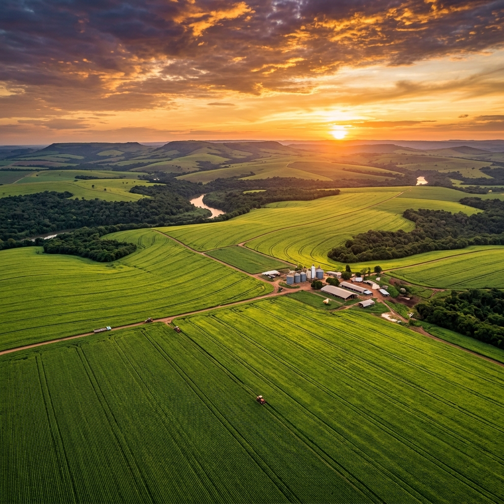
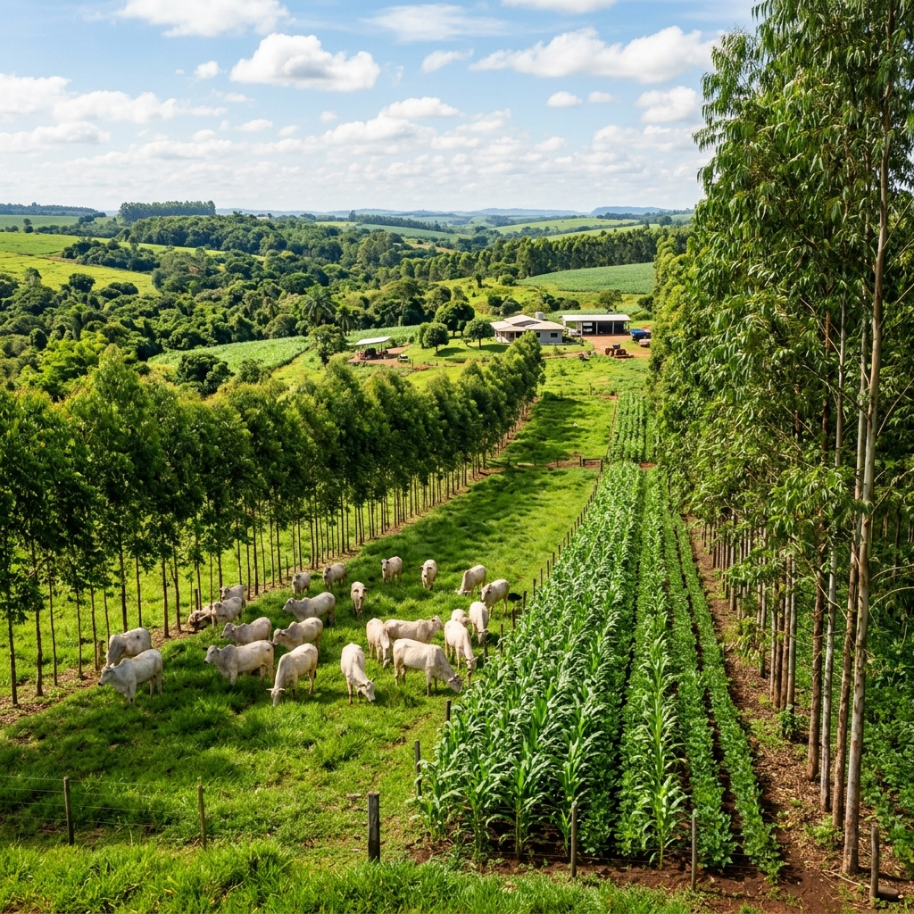
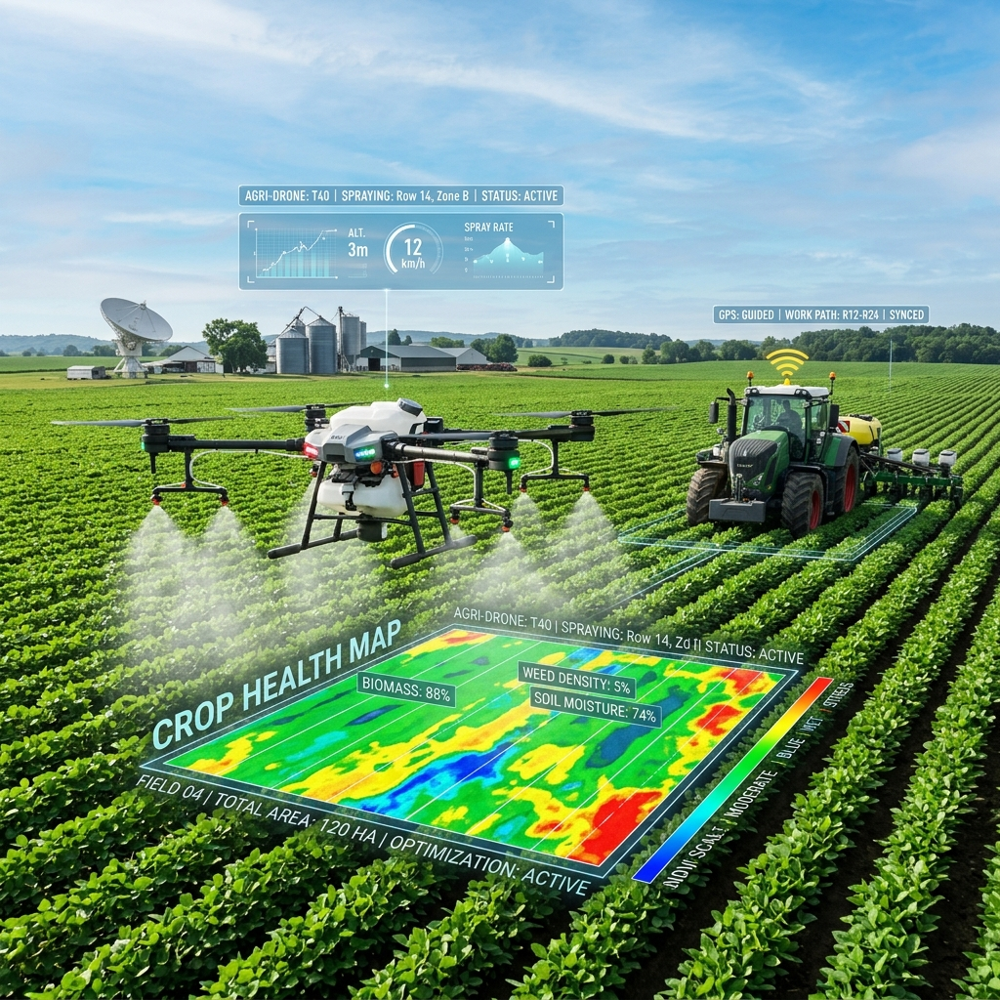
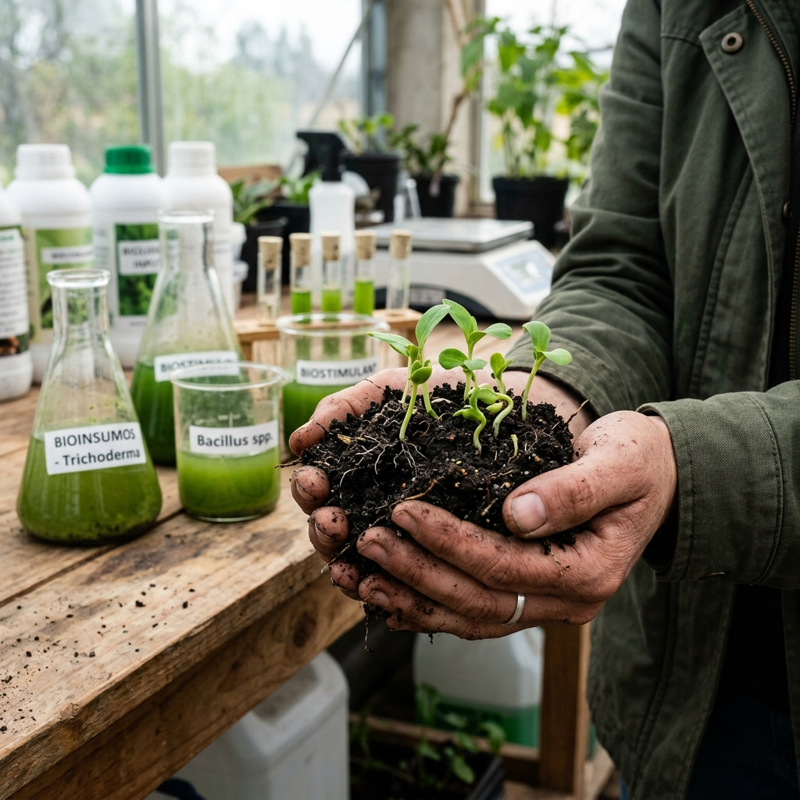
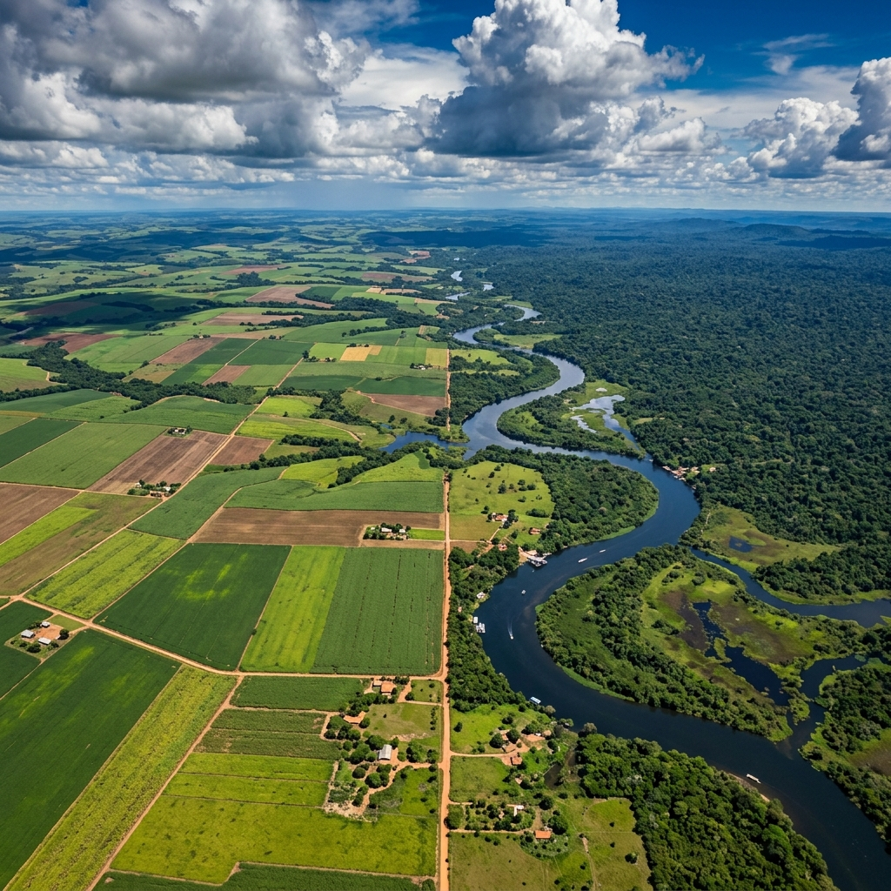
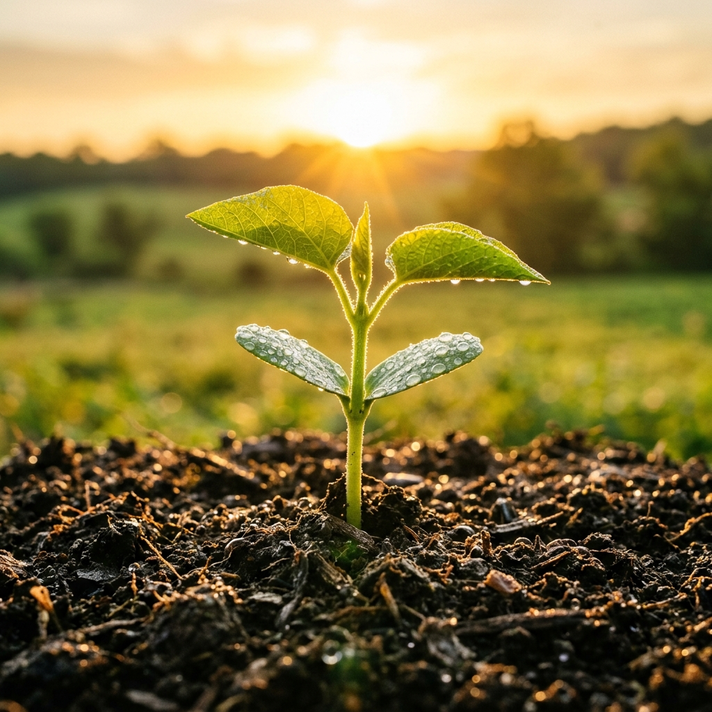

O campo brasileiro está redefinindo as regras do jogo: mais alimento por hectare, menos impacto no planeta. Tecnologia, inovação e boas práticas que provam — produtividade e natureza andam juntas.

Durante décadas, acreditou-se que expandir a produção de alimentos exigia sacrificar florestas e recursos naturais. Essa premissa está sendo derrubada, hectare por hectare, no coração do agronegócio brasileiro.
O Brasil expandiu sua produção agrícola em mais de 280% nos últimos 40 anos — sem precisar derrubar a mesma proporção de florestas. O segredo? Uma combinação de ciência agronômica de ponta, manejo inteligente do solo e adoção acelerada de tecnologias que tornam cada centímetro de terra mais eficiente.
Hoje, sustentabilidade não é apenas ética — é estratégia de negócio. Produtores que adotam boas práticas ambientais colhem safras mais rentáveis, acessam mercados premium globais e garantem a fertilidade do solo para as próximas gerações.
A Integração Lavoura-Pecuária-Floresta é um dos sistemas de produção mais avançados do mundo — e o Brasil é seu maior laboratório vivo. A ideia é elegante: combinar culturas agrícolas, criação animal e árvores na mesma área, fazendo com que cada elemento potencialize o outro.

Ao integrar árvores no pasto, criamos sombra natural para os animais, melhorando o bem-estar animal e o ganho de peso. Ao mesmo tempo, as raízes profundas reciclam nutrientes, melhorando a lavoura subsequente.
"A rotação inteligente permite produzir grãos, carne e madeira na mesma fazenda, otimizando o uso da terra."
Árvores integradas ao sistema fixam carbono no solo, aumentam a matéria orgânica e reduzem a compactação causada pelo pisoteio do gado. O resultado: mais fertilidade natural, menos gasto com insumos químicos.
Benefício ambientalCom três fontes de receita simultâneas — grãos, carne e madeira/serviços ambientais — o produtor dilui riscos climáticos e de mercado. Uma seca que prejudica o pasto pode coincidir com uma boa colheita de soja na mesma propriedade.
Benefício econômicoÁrvores estrategicamente plantadas criam microclimas que reduzem o estresse térmico do gado. Animais mais confortáveis comem menos, ganham peso mais rápido e produzem mais leite — menos custo, mais resultado.
Eficiência animalRaízes profundas das árvores funcionam como bombas naturais de água subterrânea, regulando nascentes e córregos que abastecem a própria propriedade. Água preservada é custo de irrigação evitado.
Gestão hídricaO Brasil já tem uma área maior que a Grécia inteira coberta por sistemas ILPF. São produtores que decidiram apostar na ciência e colhem os resultados: produtividade acima da média e crescente demanda internacional por seus produtos.
Escala brasileiraPropriedades que sequestram mais carbono do que emitem podem vender créditos no mercado voluntário global. Uma floresta dentro da fazenda deixou de ser "área improdutiva" — é um ativo financeiro com valor crescente.
Mercado de carbonoDrones, satélites, sensores de solo e inteligência artificial estão transformando o campo em um ambiente monitorado em tempo real. O objetivo é simples: aplicar exatamente o que a planta precisa, onde precisa e quando precisa.
Identificam zonas de estresse hídrico, pragas ou deficiências nutricionais com precisão de centímetros. Pulverizações dirigidas por IA reduzem o uso de defensivos em até 30%, poupando custo e meio ambiente.
Imagens multiespectrais monitoram o estado da lavoura em tempo real. Produtores identificam problemas antes que se tornem prejuízos visíveis, agindo com meses de antecedência.
Medidores de umidade, pH e temperatura instalados no campo enviam dados para smartphones. Irrigação só acontece quando o solo realmente precisa — economia média de 40% em água.
Tratores guiados por GPS com precisão de 2 cm eliminam sobreposições de plantio e aplicação. Cada passagem desperdiçada custa fertilizante, combustível e emissões desnecessárias de CO₂.

O mercado de bioinsumos — defensivos e fertilizantes de origem biológica — é a mais disruptiva transformação do agro moderno. O Brasil já é o maior mercado mundial desse setor.
Microrganismos como o fungo Beauveria bassiana atacam pragas específicas sem contaminar o solo, a água ou a cadeia alimentar. Eficazes, seguros e aceitos pelos mercados consumidores mais exigentes do mundo.
Bactérias fixadoras de nitrogênio aplicadas nas sementes substituem toneladas de ureia importada. O Brasil economiza bilhões anualmente com inoculantes biológicos na soja — e emite muito menos CO₂ no processo.
Os nematoides causam perdas bilionárias na soja e no milho. Novas soluções biológicas — fungos e compostos naturais — controlam esses parasitas sem deixar resíduos nas culturas.
O setor de bioinsumos no Brasil cresce a taxas de 20% ao ano — bem acima do agro convencional. A combinação de eficiência comprovada, custo competitivo e apelo ambiental faz dessa tecnologia o novo padrão do campo.

Nenhum outro país no mundo reúne, ao mesmo tempo, a maior biodiversidade do planeta, a maior reserva de água doce e uma das agriculturas mais produtivas e tecnológicas da história. Essa combinação única faz do Brasil um actor geopolítico central na segurança alimentar global.
A Embrapa — empresa pública de pesquisa agropecuária — desenvolveu tecnologias que tornaram o Cerrado produtivo sem destruir a Amazônia, adaptou soja e milho ao clima tropical e criou raças bovinas eficientes para o calor. É um patrimônio científico que beneficia o planeta inteiro.

Não existe transição energética, segurança climática ou soberania alimentar sem um agronegócio que equilibre a força da produção com o respeito pela natureza. Esse equilíbrio não é utopia — está acontecendo agora, no Brasil e no mundo.

A próxima revolução verde não virá dos laboratórios das capitais. Ela está sendo construída por agricultores, pesquisadores e empreendedores que entendem que terra saudável e lucro não são opostos — são parceiros inseparáveis.